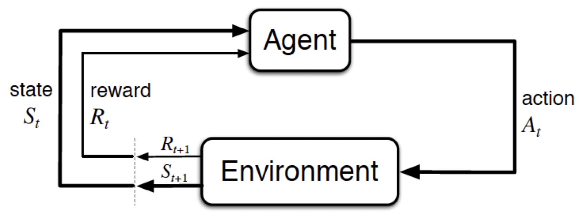
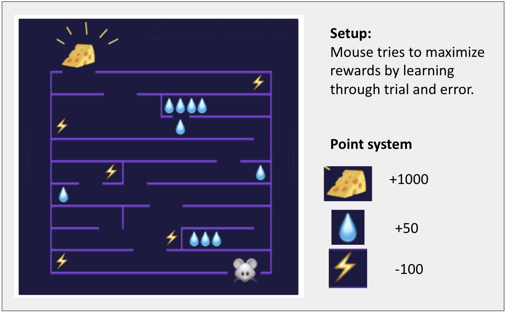

Lesson 8 - Reinforcement Learning
At the end of this lesson, you will be able to:
- Explain what is Reinforcement Learning and how it works.
- Identify the different Reinforcement Learning problems.
- Summarize Reinforcement Learning Algorithm.
What is Reinforcement Learning?

- In reinforcement learning, the algorithm learns through trial-and-error using feedback to its own actions.
- Rewards and punishment operate as signals for desired and undesired behavior.
- Imagine the following game set-up, in which a mouse (the agent) tries to maximize its rewards in a maze.

- In this case, cheese is the reward, rat is the agent and maze is the environment .
- The rat must choose the path which leads to cheese.
- The rat must remember every wrong path it takes, so that it doesn’t go there again.
- This helps the rat to move closer and closer to the reward.
Let's try to understand how this works with the help of Pac-man!